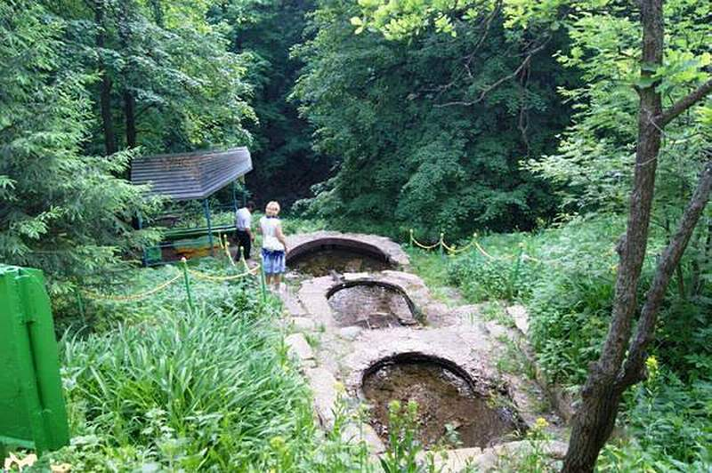

Родник - символом связи поколений, будет способствовать формированию у населения, особенно у молодёжи, чувства патриотизма и любви к малой родине, высокого уровня культуры поведения, бережного отношения к природе и творениям рук человеческих
Наша земля богата лечебной грязью, лечебной водой.
Именно здесь расположен знаменитый курорт Бакирово.
Лениногорский район - рекордсмен по количеству родников в Татарстане!
Родники Лениногорского района РТ
Берегите родную природу! Природа - это слово вызывает только приятные ассоциации и воспоминания. Общаясь с живой природой, человек отдыхает душой. Сама природа учит нас ценить красоту и искусство, а главное — беречь их. Но не всегда мы можем защитить прекрасное. Чаще всего по нашей вине гибнут леса, реки, животные, птицы. Губя природу, человек не осознаёт, что гибнет сам. Ведь его здоровье и благополучие зависят от окружающей среды. Поэтому каждый из нас должен всегда помнить об этом, уметь быть благодарным. Давайте будем беречь природу — каждый в меру своих сил и возможностей. Мы должны заботиться о будущем нового поколения.
В республике Татарстан насчитывается более чем 3 000 источников не централизованного водоснабжения. Родники всегда являлись основными источниками чистой пресной питьевой воды и играли огромную роль в жизни человека.
Лениногорский район занимает первое место по количеству родников в республике - по состоянию на 1 января 2006 г. на территории района насчитывалось 263 родника, из них в 64 ключах постоянно контролируется качество воды. Каждый такой природный источник имеет свое название: «Лесная прохлада», «Легенда», «Петушок», «Прохладный», «Раздолье», «Старая мельница», «Муртаза» у деревни Зай-Каратай, «Тёплый ключ» у деревни Старая Письмянка, родник на базе отдыха «Ландыш», «Сернистый источник» у села Каркали и многие другие.
Глава района осмотрел состояние родников Лениногорского района
Родник Лесная фантазия
В рамках республиканской акции «Чистые леса Татарстана» глава района Рягат Хусаинов в сопровождении главного лесника Салиха Фазлирахманова и других осмотрел территорию родников и мест отдыха Лениногорского района.
С наступлением лета лениногорцы всё чаще выбираются отдохнуть от городской суеты на природу, но не каждый умеет отдыхать культурно. Зачастую некоторые оставляют за собой горы мусора. Посещая излюбленные места отдыха, вместо живописной природы можно увидеть мусор: стеклянная и пластиковая тара, пакеты, окурки.
К счастью, не все родники находятся в бесхозном состоянии. В числе осмотренных родников есть и такие, которые являются примером для подражания. На территории таких мест отдыха установлены беседки, контейнеры для сбора мусора, а предприятия, за которыми закреплены родники, обеспечивают его своевременный вывоз.

Родники Лениногорского района РТ
Нужно понимать, что закрепить каждый родник за тем или иным предприятием невозможно, да и не в закреплении дело. В первую очередь, необходимо воспитывать культуру поведения наших горожан. Больно и грустно смотреть, во что превращается живописная природа и плодородные земли нашего края. Ведь сколько в нашем районе замечательных родников, и сколько их засоряют люди!
Уважаемые горожане, активная молодёжь, руководители предприятий! Призываем вас поучаствовать в уборке родников и очистить живописные окрестности нашего города. Давайте вместе сделаем наш мир чуточку чище!
родник Ромашка
Молодые лениногорцы своими силами очищают родники
Несколько молодых лениногорцев решили своими силами навести порядок на территории родников города и призывают делать это остальных. Первым в списке очищенных стал источник “Здоровье”, где добровольцы побывали вчера, 29 июня.
Несмотря на дождливую и пасмурную погоду, активисты дружно и, судя по улыбкам на их лицах, весело собрали несколько пакетов мусора на прилегающей к роднику территории. Сегодня они должны были побывать на роднике в Геофизике. И так, один за другим, они хотят привести в порядок все городские источники.
И похоже, что ребята не собираются ограничиваться только родниками. Вот что сами они пишут в одном из сообществ в социальной сети “ВКонтакте”: “Мы с друзьями решили привести в порядок наш город, и начали мы с родников, так как это то, чем мы должны гордиться”.
Родники Лениногорского района РТ
В последующем волонтёры хотели бы собрать команду единомышленников и проводить такие полезные мероприятия, заодно попивая вкусный чай с пряниками и приятно общаясь. Эта инициатива вызвала немалый интерес у интернет-аудитории Лениногорска. Нашлись и те, кто уже готов к ним присоединиться.
Что ж, хочется верить, что это начинание найдёт поддержку у наших жителей. Ведь, к сожалению, не каждая такая инициатива живёт долго. В этой связи вспоминается другое подобное экологическое движение – “Мусора больше нет”, которое зародилось в нашем городе в 2011 году, однако просуществовало недолго. (“Лениногорский Журнал” писал тогда об их акциях здесь и здесь.) Но не будем о грустном. Желаем ребятам неиссякаемого энтузиазма и таких же активных помощников.
Родник “Старая мельница” получил вторую жизнь
Красивейшая природа – вот главная особенность Лениногорска. Тут вам и лес, и горы, и озёра, и многочисленные родники. Считается, что родниковая вода обладает целебными свойствами, и поэтому в народе предпочтение отдаётся именно ей – чистой, природной родниковой воде, которая дарит энергию тем, кто её пьёт.
«Старая мельница» – так называется источник, который расположен на пути к птицефабрике. Совсем недавно тут были закончены ремонтные работы, организованные службой охраны окружающей среды УК ООО «ТМС групп». До реконструкции прилегающая к роднику площадка была сильно запущена, в основном «благодаря» некультурно отдыхающим гражданам, складирующим здесь свой мусор.
Родники Лениногорского района РТ
Благоустройство родника порадовало жителей Лениногорска не только новым декоративным решением (покраска всех объектов и малых архитектурных форм, обновленная зона отдыха, площадки, вымощенные плиткой, разбивка газонов и клумб), но также чистотой и порядком на всей территории источника, что преобразовало захламлённое и заросшее бурьяном пространство в милый уютный уголок.
Теперь «Старая мельница» превратилась в красивое место, которое не только обеспечивает население чистой родниковой водой, но и радует глаз окружающим ландшафтом.
Во время крепостного права один человек по имени Макар сбежал от своего хозяина и забрел в этот лес, который находился около села Спиридоновка. В это время он был глухим, и люди редко бывали тут.
Макар облюбовал родник и холмы вокруг него, покрытые густым лесом. На холме он выстроил землянку, баню, амбар. Вместо бревен он использовал каменные плиты. Все это сохранилось до наших дней. Здесь он стал жить. Со временем завел скотину, которую водил на водопой к роднику. Тропа его до сих пор видна и по ней люди взбираются на холм. Жил он отшельником.
Жители села обнаружили его жилище и объявили святым. Стали ходить к нему за советом. Макар был человеком добрым, образованным и принимал всех, кто приходил к нему за помощью.
В это время в лесах скрывались разбойники, они тоже навещали Макара. Узнав об этом, кто-то сообщил властям, Макара арестовали и сослали из этих мест. Но люди села помнили о нем и в его честь назвали родник «Макар латко» («Макаров овраг»).
Нефтяники ЦДНиГ-4 НГДУ «Лениногорскнефть» обустроили родник. На поляне сделали место для отдыха. Поставили две беседки. На этой поляне люди празднуют большой праздник «Троицу» и водят хороводы с Медведем. Кроме этого, сюда приходят отдохнуть в выходные дни.
В давние времена около родника была построена небольшая часовня, и люди туда ходили молиться. Вокруг часовни росли ивы. Так как молиться в основном, ходили женщины, особенно пожилого возраста, то и родник назвали «Бабушка». Со временем и ивы, растущие, вокруг родника постарели, то и родник стали называть «Баба-каль», что в переводе с мордовского означает «Бабушка-ивушка».
Когда нефтяники по району стали обустраивать родники, то и этот родник обустроили работники УПНП и КРС. Поставили беседку, рядом столик со скамейками, а сам родник укрыли и нарисовали бабушку с ведрами и коромыслом.
Родники Лениногорского района РТ
«Каркалинский родник»
Актуальность. Основная идея проекта.
В нашей местности очень много родников: больше 70 больших и малых источников. Это наша гордость и история. Родники Лениногорского района особенные, в том числе и Каркалинский.
Почему же мы остановили свой выбор именно на этом источнике? Это обусловлено тем, что испокон веков жители окружающих деревень пользовались лечебными свойствами этого родника.
Каркалинская вода исцеляла людей от многих недугов, болезней. Употребление такой воды в наше время, в связи с загрязнением окружающей среды, когда остро встает вопрос о здоровье людей, особенно значимо.
Познакомить детей с такой достопримечательностью нашего края, как сероводородный источник, его целебными свойствами поможет проект «Каркалинский родник!». Основное направление данного проекта реализуется в процессе поисково-исследовательской, экспериментальной деятельности.
История возникновения Каркалинского родника.
Каркалинский сероводородный природный источник расположен у подножья высокой горы, близ деревни Каркали.
Архивные документы свидетельствуют, что название сёл исходили от рек, на берегах которых они располагались. Так, деревня Каркали, что на речке Каркали, и получила свое название (из документов второй ревизии 1744-47 годов).
Это вполне закономерно: ведь когда-то реки здешних мест изобиловали рыбой, особенно форелью-пеструшкой. Так как местные тюрские племена называли форель-пеструшку керкэ, хотя она и на татарском языке называется ала балык – пёстрая рыба, речка так и была названа Керкэле – форельная.
Естественно, в краю, где полно форели, название хотя бы одной речки не могло быть не связано с названием этой рыбы. И действительно, такая речка (Керкэле) Каркали протекала здесь испокон веков. Само собой разумеется, что деревня образовавшаяся в устье этой реки, была названа «Каркали», а родник – «Каркалинский».
Поэтическое слово.
«Каркалинский родник»
А.Володин. «Родники»
Наша добрая земля
Дарит нам леса, поля,
Дарит реки и пруды,
И цветущие сады.
Но известен край родной
Родниковою водой,
И близки и далеки-
Родники, родники!
У деревни Каркали
Я попью святой воды,
Что от матушки- земли
Нам дарована.
У деревни Каркали
Поклонюсь я до земли,-
Там, где чудо- родники
Окольцованы.
Родниковая вода
Нам желает лишь ДОБРА,
Чтоб могли мы молодеть,
Не тужить и не болеть.
Только нужно так нам жить-
Родников не погубить,
Чтоб звенели и влекли-
Родники, родники.
Сказ о Каркалинском роднике
(Е.А. Анисимова, заместитель заведующей по воспитательно-методической работе)
В давние-давние времена в нашей местности жили тюркские племена. Их окружали леса, горы, реки. Рек было много, в изобилии. В чистых холодных водах множества речек тенью носилась форель-пеструшка, рыба капризная, чистоплотная, отличных гастрономических качеств. Поэтому называли ее не иначе, как царская пища.
В наших местах этой рыбы было много не только в прошлом веке. Имеется она и сейчас, в прозрачных родниковых водах.
Естественно, в краю, где полно форели, название хотя бы одной речки не могло быть не связано с названием этой рыбы. Так как местные тюркские племена называли форель-пеструшку керкэ, речка так и была названа Керкэле – форельная.
А деревня, что образовалась в устье этой реки, стала называться Каркали. В те далекие времена названия сел исходили от рек, на берегах которых располагались деревни. Так, на речке Каркали появилась деревня Каркали.
Прошли годы. Климат в нашей местности изменился. Речка Каркали высохла, но остался родник, который так и называется «Каркалинский».
Вода в роднике особая, целебная. Она имеет своеобразный запах и вкус. В воде много серы и водорода. В народе этот ключ так и нарекли «Каркалинский сероводородный источник».
Люди о лечебных свойствах сероводородной воды издавна знают, многие свои недуги этой водой исцеляют, поэтому они родник бережно охраняют. Нефтяники шефство над источником взяли. Ландшафту вокруг родника прекрасный вид создали. Каменной стеной родник огородили, тропинку вымостили, беседку для отдыха поставили.
Родник так и манит каждого попутчика: «Приди, отдохни, ключевой, целебной воды глотни».
И я там побывала. Красоту земную повидала. Чудодейственные силы родника испытала.
НОВЫЙ ИШТЕРЯК
Через с.Новый Иштеряк протекают реки Шушма, Халик, Чат, Яман, Беркут кулы.
Халик - река с сильным течением. За родником присматривал человек по имени халик, в его честь названа и река.
Река Чат (Перекресток) названа потому, что находится между селами Старый Иштеряк и Новый Иштеряк.
Река Яман (страшная) с чистой водой. Но есть легенда о том, что, если умыться ее водой, портится тело, поэтому нужно сразу опустить в воду кусок материала. В случае болезни бабушки лечат молитвой.
Река Беркут кулы (крыло беркута) вливается в р. Яман, раньше около реки было много беркутов, в настоящее время их наблюдается очень мало.
Родники "живой" воды
Родник Мусы, именной родник. За этим родником присматривал человек по имени Муса. Родник находился около его дома. Родник Бичура (хозяин бани) с теплой водой, впадает в р.Шушма. Бичура любит тепло, поэтому родник назван так из-за теплой воды. Родник семи глаз с сильным течением, вода жесткая, население пользуется водой при солении овощей. Сернистый родник используется в целебных целях при заболевании костей. Холодный родник, назван из-за очень холодной воды. Месторасположение вдали от села. Болотный родник. Вода мягкая, используют для мытья головы.
ДОМ ОБХОДЧИКА
В год 50-летия НГДУ «Елховнефть» с особым вниманием обустроило подшефные родники. Управление по занимаемой территории является крупнейшим в «Татнефти», ведет разработку в шести муниципальных районах РТ. Шесть его конкурсных родников были показаны рабочей комиссии в Заинском, Альметьевском и Лениногорском районах.
Родники Лениногорского района РТ
Разброс их довольно-таки большой, но они отличаются не только своим местонахождением (в лесу, в населенном пункте, в овраге, в речной долине и т.д.). В них тесно переплелись история и современность, как, к примеру, на роднике «Дом обходчика» (ЦДНГ-2) в Лениногорском районе. Маленькое старинное здание, давшее названию источнику, появилось после того, как в 1956 году на этой территории была пробурена нефтяная скважина. Домик имел чисто утилитарное значение, чтобы оператор, сделав обход скважин, мог отдохнуть, выпить воды и набраться свежих сил. Работники цеха покрасили крышу, побелили фасад, и будто вновь ожила история прошлого. Стараниями молодых нефтяников здесь все обихожено: выкошена сорная трава, посажены ели, отсыпаны галькой берега ручья.
Преобразился под умелыми руками работников ЦДНГ-1 родник «Гулистан» в Лениногорском районе. «Страна цветов» свое название оправдывает», – замечают, глядя на яркие, пышные клумбы у спуска к истоку, и члены рабочей комиссии.
Родники Лениногорского района РТ
Основной объем работ был выполнен в 2011 году, в 2012-м акцент был сделан на обустройстве каптажа – его полностью закрыли, а кроме того, завезли землю и восстановили ландшафт, размытый в весеннее половодье. Побелили стволы деревьев, что придало праздничный вид территории. Рядом с источником – немало скважин, но они не оказывают воздействие на качество воды, показывают нефтяники на табло с результатами лабораторных анализов.
_____________________________________________________________________________________
ИСТОЧНИК ИНФОРМАЦИИ И ФОТО:
Команда Кочующие
Татарская энциклопедия: В 6 т /Гл. ред. М. Х. Хасанов, отв. ред. Г. С. Сабирзянов. — Казань: Институт Татарской энциклопедии АН РТ.
Шугур — край сокровищ: / Рахимов Замит. — Казань; Казань: Изд. дом. «СТАР»: Полиграфическо- издательский комбинат, 1997.
Лениногорск, город (Республика Татарстан)
http://letopisi.org/